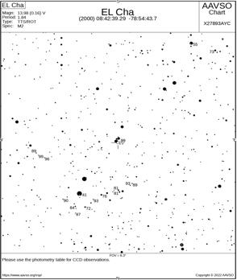

test alert edited and accepted: number 1103
2022-04-14
Attn AAVSO observers
Colleagues:
An alert message entitled test alert edited and accepted has been submitted by Peter Higgins with none on 2021-12-01 and was approved on 2022-04-14. This request is asking for community observation support beginning 2021-12-10 through 2021-12-30.
The justification given in this request is: testing.
The submitters instructions are: make observations
The submitters notes to observers follow: none
The submitters have included the following table:
Cadences selected are: hourly nightly
Variability types indicated are: cataclymic variables
Modes of Observing selected are: Visual
Photometry filters that may be used include: U
For further information, AAVSO forums: Visit forum
Target stars are (* indicates not found in VSX):| Star | Con | MinV | MaxV | RA 2000 h:m:s | Dec 2000 d:m:s |
| VY | Scl | 11.8 | 18.6 | 23 29 0.47 | -29 46 46.0 |
| WX | Ari | 14.5 | 18.6 | 02 47 36.22 | +10 35 37.7 |
| V0442 | Oph | 13.45 | 16.4 | 17 32 15.14 | -16 15 22.1 |
| V0794 | Aql | 13.4 | 18.6 | 20 17 33.92 | -03 39 51.0 |
| V0704 | And | 12.6 | 19.5 | 23 44 57.51 | +43 31 22.3 |
| V1024 | Cep | 14.7 | 20.7 | 05 06 48.28 | +83 19 23.3 |
| LM | UMa | 8.21 | (0.06) | 09 46 0.63 | +45 52 13.1 |
| V0380 | Oph | 14.3 | 19.0 | 17 50 13.62 | +006 05 29.3 |
| V0425 | Cas | 14.4 | 18.0 | 23 03 46.66 | +53 17 14.9 |
Thank you very much for your support.
Sincerely,
AAVSO staff